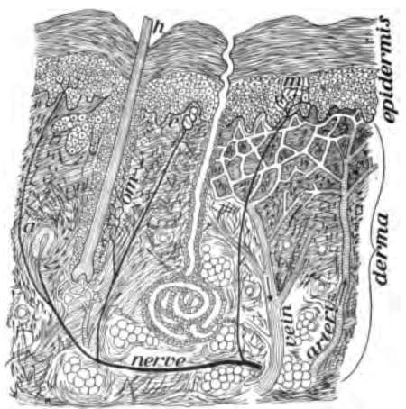
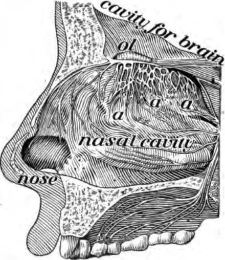
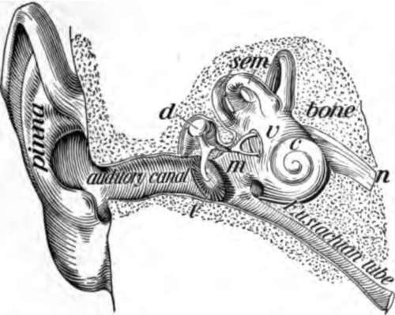

Chapter XVIII. Organs For Receiving Knowledge
Description
This section is from the book "The Human Body And Health", by Alvin Davison. Also available from Amazon: The Human Body and Health.
Chapter XVIII. Organs For Receiving Knowledge
How We Learn Of Things About Us
The organs for receiving knowledge of the things about us are called sense organs. They are to the nerves what the telephone transmitter is to the telephone wire. These sense organs are the endings of the receiving nerves. They are the means by which all news get on to the nerves to be carried to the spinal cord and brain.
Fig. 124. Thin slice through the skin to show nerve endings, m, e and a. Much enlarged.
One's knowledge of an apple is secured through certain sense organs in the skin touching the apple, through the sense organs in the nose catching the odor of the apple, through the sense organs in the tongue taking note of the sweetness, and through the sense organs of sight affected by the light coming from the apple. None of these impulses excited in the sense organs can give rise to sensations or real knowledge until they reach the brain.
The Kinds Of Senses
There are two general classes of senses. The inner or general senses are those telling a person of the condition of the body. To this class belong the senses of hunger, pain, thirst, and weariness. The outer or special senses are those receiving the news of heat, cold, pressure, smell, taste, hearing, and sight.
Senses Of The Skin
In all parts of the skin, there is one kind of end organ for pain, another for pressure, another for heat and still a different one for cold sensations. These organs are little bulbs or other simple structures, too small to be seen without a microscope. They are of great use as they tell us when the body is too hot or too cold or when it is being hurt. The end organs of pain are present in many other parts of the body besides the skin.
The Sense Of Smell
The end organs of smell are in the mucous membrane of the upper part of the cavity of the nose. They are affected only by substances which have odor. Their use is to help one to tell when food is fit to be eaten, when air is pure, and to give more pleasure in the eating of food with appetizing odors. In case of cold, mucus collects on the organs of smell and they are squeezed up by the swollen mucous membrane, so that they are of little use.
Fig. 125. The side of the nose has been cut away to show a, the ending of the nerve of smell.
The Sense Of Taste
The sense organs of taste lie in the mucous membrane of the tongue and other regions of the mouth. They are tiny oval bodies called taste buds from which nerve fibers lead to the brain.
A substance can arouse the sense of taste only when in the form of a liquid or dissolved in a liquid. It is therefore important that all food should be chewed many times and dissolved as completely as possible in the mouth, so as to affect the sense of taste. This causes the gastric juice to flow abundantly.
The Sense Of Hearing
The organs of hearing are the ears. Each one consists of three parts, named the outer ear, the middle ear and the inner ear. The outer ear is composed of the pinna sticking out from the side of the head to catch the sound, and the tube an inch long, extending inward. Across the inner end of the tube is a thin membrane, named the tympanic membrane.
The middle ear or tympanum is called the ear drum because it is somewhat like a drum. It contains air which may pass in and out through the tube leading to the throat. The mouth of the tube is usually closed, but it opens every time a bit of food or even saliva is swallowed. Three bones form a chain stretching from the outer membrane, which is the tympanic membrane of the middle ear, to the inner membrane closing a small oval opening into the internal ear (Fig. 126).
The inner ear is deep in the temporal bone. It consists chiefly of three tubes forming half circles, a tube coiled like a snail shell, and a little cavity into which the four tubes open. These parts are filled with fluid and surrounded on the outside with a watery fluid.
Fig. 126. The ear. m, middle ear; d, bone of the middle ear; t, membrane of the ear drum; n, nerve of hearing; sem and c, canals forming the inner ear.
How We Hear
The tap of a bell or any other sound makes little waves in the air much like the waves made in water by casting in a pebble. These air waves strike on the outer membrane of the ear drum and make it move the chain of bones in the middle ear. The bones then move the inner membrane so that it makes waves in the fluid of the inner ear to strike on the organ of hearing. This feeling aroused by the waves is carried by the nerve of hearing to the brain which has learned to know the meaning of each kind of wave.
The Care Of The Ears
Hard objects, such as pencils and sticks, should not be pushed into the outer ear for fear of breaking the ear drum. The wax which tends to keep insects and dirt from lodging on the tympanum sometimes collects in too large quantities in the canal. It may then be removed with a soft moist cloth.
Insects finding their way into the canal of the outer ear may be killed or made to come out by putting in a few drops of warm soapy water while the patient is lying down with the affected ear uppermost. In ten minutes after the water is in, the ear should be turned down on the pillow when the water will flow out and carry the insect with it.
Ear Ache
This is a common ailment among children. It is sometimes caused by sitting in the wind after running or playing. Sleeping so that the wind blows on the head may also produce ear ache. Another common cause is the presence of spongy growths called adenoids in the upper part of the throat at the back of the nose. They close the opening of the tube leading from the throat to the ear (Fig. 75). A physician should be consulted.
Continue to:
- prev: The Care Of The Nervous System And How Narcotics Affect It. Continued
- Table of Contents
- next: Organs For Receiving Knowledge. Part 2